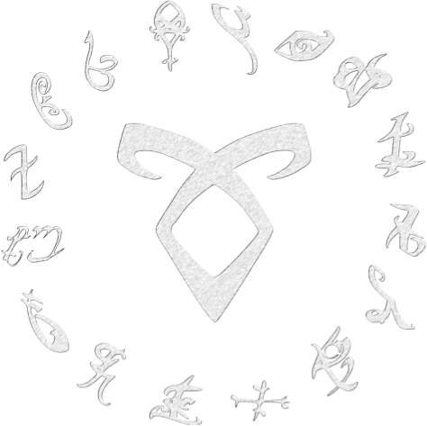
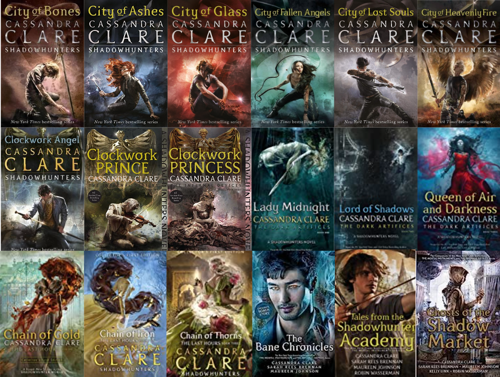
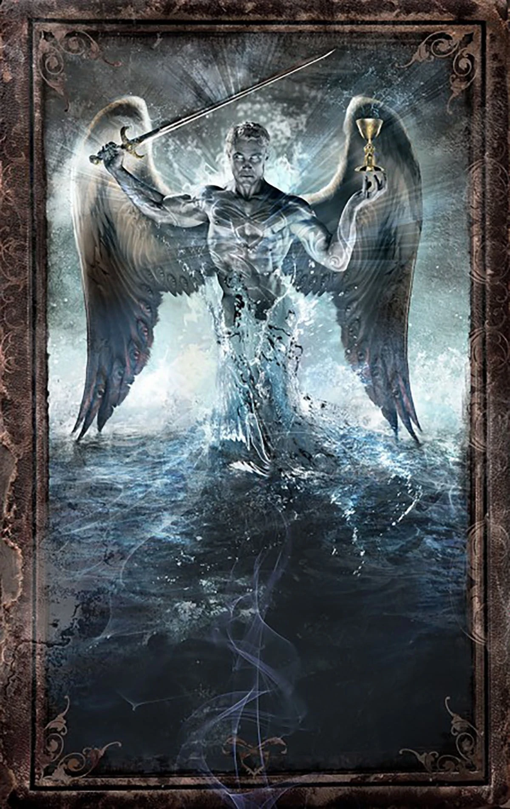

The Shadowhunter Chronicles are a group of book series written by the author Cassandra Clare (Judith Lewis) which started being published in 2007, with its first book being City of Bones, forming part of the first series, The Mortal Instruments.

These books are part of the paranormal fantasy genre, presenting non-human creatures like vampires, werewolves, faeries, warlocks, demons, and of course, the Shadowhunters, or Nephilim, who fight to protect humans and maintain control of the shadow world.
The main topics reached in the books are identity, family, loyalty, love, belonging, and the fight against evil and prejudice.

The Shadowhunter Chronicles are composed mainly of six main series and three main companion books, which are The Bane Chronicles, Tales From the Shadowhunter Academy, and Ghosts of the Shadow Market, plus The Shadowhunters Codex, an illustrated guidebook detailing the story, laws, and lore of Clare’s Shadowhunter Chronicles. The main series are:

Something that I like about these books is that not every single series is set in the same era, nor in the same place. The series timelines and locations are:
| Series | Time Period |
|---|---|
| The Infernal Devices | Victorian London |
| The Last Hours | Edwardian London |
| The Mortal Instruments | Modern New York |
| The Dark Artifices | Modern Los Angeles |
For more information about the series, you can click here to access the WikiFandom page.
Betsabeth U. | ICT-280